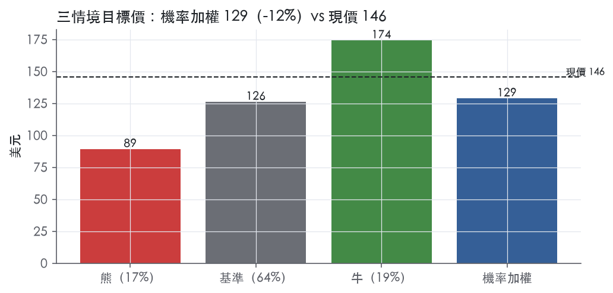
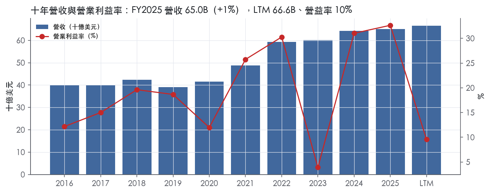
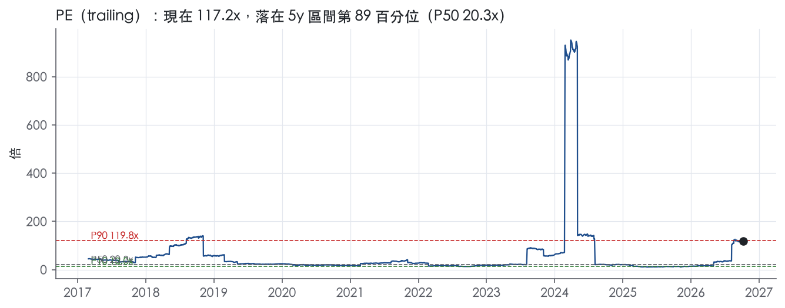
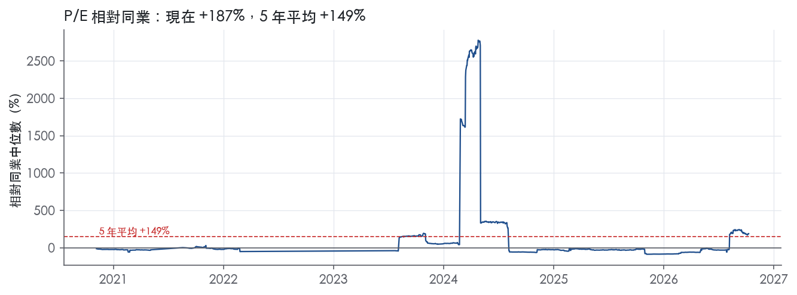
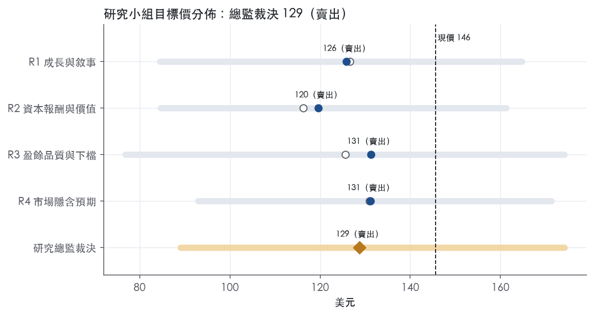
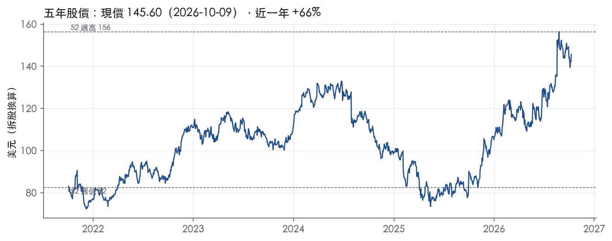

評等總表 › 醫療保健 › MRK
成長下修、倍數回P50下，看空｜評等 賣出｜目標價 129
| 評等 | 賣出 |
| 12 個月目標價 | 129 美元 |
| 現價 | 145.60 美元（2026-10-09） |
| 預期報酬 | 股價 -11.6%＋股息 2.3%＝總報酬 -9.2%；同業籃門檻 10.1%，超額 -19.4% |
| 估值方法 | P/E 18.5x，套在第 5–8 季的EPS（也就是一年後的未來四季） |
| 三情境 | 熊 89／基準 126／牛 174 |
| 研究流程 | 四位研究員兩輪辯論＋研究總監裁決 |
| 資料來源 | SEC EDGAR XBRL、Tiingo、FRED（全免費） |
成長下修、倍數回P50下，看空（研究總監裁決，四位研究員兩輪辯論後）
評等 賣出｜12 個月目標價 129 美元（總監三情境機率加權 129 與研究員中位數 129 各半）｜現價 145.60（2026-10-09）
預期報酬：股價 -11.6%＋股息 2.3%＝總報酬 -9.2%。同業籃門檻 10.1%，超額 -19.4%。
估值方法：P/E 18.5x，套在第 5–8 季的EPS（也就是一年後的未來四季）。三情境：熊 89（17%）／基準 126（64%）／牛 174（19%）。
什麼會讓研究總監改變看法：FY2026Q3 Keytruda/Qlex ex-FX 年增≥8% 且應收成長回到營收附近、FY2027 指引中點≥70B，我會把 y1／y2 調回基準並把倍數上調至市場持平 21.2x；CMS 2029 名單未列 Keytruda 或確認 Qlex 不受同輪談判約束，折價理由消失。
| 過去四季（實際，FY2026Q2） | 未來四季 | 第 5–8 季 | 第 9–12 季 | |
|---|---|---|---|---|
| 營收（B） | 66.6B | 68.9B | 71.7B | 72.4B |
| 營收成長 | 4.6% | 3.5% | 4.0% | 1.0% |
| 營業利益率 | 9.6% | 29.5% | 29.5% | 28.0% |
| EPS（美元） | 1.24 | 6.50 | 6.82 | 6.54 |
| EPS 成長 | -80.8% | 423.3% | 4.9% | -4.0% |
| 每股股息（美元） | 3.36 | 3.36 | 3.36 | 3.36 |
| P/E（現價） | 117.2x | 22.4x | 21.4x | 22.3x |
| 股息殖利率（現價） | 2.3% | 2.3% | 2.3% | 2.3% |
過去四季為申報數字；預測為研究總監的假設、程式計算。倍數與殖利率都用現價計算，用來看現價對應各期獲利的高低。
| 情境 | 機率（歷史） | 故事 | 未來四季營收成長 | 第 5–8 季營益率 | 倍數 | 目標價 | 股價漲跌 |
|---|---|---|---|---|---|---|---|
| 熊 | 17%（16%） | 風險表第五條 Bridion 學名藥進入與 Januvia/Janumet 延續 −31%、第四條 Gardasil 中國與 CDC 單劑、盈餘品質章通路紅旗於 2026 年 Q3／Q4 回吐，加第一條 CMS 2027-02-01 前公告 Keytruda 入選，倍數壓至帶 P25 15.4x | 2.5% | 26.0% | 15.5x | 89 | -38.8% |
| 基準 | 64%（66%） | 放量端被 Januvia/Janumet、Bridion、MFN 抵銷過半，中個位數成長、29.5% 利潤率，2027 年秋面對 MFP 公布，倍數由 21.2x 回落至 P50 之下 | 3.5% | 29.5% | 18.5x | 126 | -13.4% |
| 牛 | 19%（18%） | FY2026Q3 Keytruda/Qlex ex-FX 年增≥8% 且無通路回吐、Winrevair 維持 70%+、Lipfendra 放量、FY2027 指引中點≥70B，市場相信 Qlex 延後斷崖，倍數維持 P50–P75 間，回購恢復 | 5.5% | 32.0% | 22.0x | 174 | 19.6% |
目標價由程式依研究總監的驅動與倍數計算；機率由研究總監給定。括號內是歷史頻率：把這檔股票過去十年 12 個月報酬的波動形狀，置中在基準情境，結果落在各情境附近的比例。

四位研究員用不同方法各自估值，回應研究總監的質疑後交出第二輪，最後由總監逐點裁決。各研究員的主張見第七章，裁決理由見第八章，完整論證見《研究底稿》。
| 立場（一輪→二輪） | 加權目標價（一輪→二輪） | 評等（一輪→二輪） | 第二輪倍數 | 熊～牛目標價 | |
|---|---|---|---|---|---|
| R1 成長與敘事 | 看空→看空 | 127→126 | 賣出→賣出 | 19.0x | 85～165 |
| R2 資本報酬與價值 | 看空→看空 | 116→120 | 賣出→賣出 | 17.5x | 85～161 |
| R3 盈餘品質與下檔 | 看空→看空 | 126→131 | 賣出→賣出 | 18.5x | 77～174 |
| R4 市場隱含預期 | 看空→看空 | 131→131 | 賣出→賣出 | 19.5x | 93～171 |
| 研究總監裁決 | 看空 | 129 | 賣出 | 18.5x | 89～174 |
目標價由程式依各自的驅動與倍數計算；評等＝機率加權總報酬 − 同業籃門檻。
Merck是一家全球醫療保健公司，透過處方藥（包括生物製劑）、疫苗及動物保健產品提供健康解決方案¹。公司營運以產品為基礎管理，分為兩個報告分部：Pharmaceutical與Animal Health¹。人用藥品主要銷售給藥品批發商與零售商、醫院、政府機構及健康維護組織、藥品福利管理公司等管理式醫療機構¹；人用疫苗主要銷售給醫師、批發商、經銷商及政府單位¹。動物保健產品則銷售給獸醫、經銷商、畜牧生產者、農場主及寵物飼主¹。簡單說，這是一家由腫瘤旗艦藥Keytruda撐起現金流、同時用疫苗與動物保健分散風險的大型藥廠。FY2025營收65.01B美元，年增1.3%，LTM營收66.57B美元，規模雖大但成長已明顯放緩。
Pharmaceutical是絕對主力，FY2025營收58,142M美元，佔總營收近九成；Animal Health為6,354M美元¹。Pharmaceutical分部內最大單品仍是Keytruda/Keytruda Qlex，FY2025銷售31,680M美元，年增超過前一年29,482M美元¹，單一產品就佔總營收近半，集中度極高。Gardasil/Gardasil 9因中國市場疲弱，FY2025銷售降至5,233M美元，低於FY2024的8,583M與FY2023的8,886M¹，呈連續衰退。新藥Winrevair（肺動脈高壓）快速放量，FY2025銷售1,443M美元，較FY2024的419M大幅成長¹；Capvaxive（成人肺炎鏈球菌疫苗）FY2025銷售759M美元，較FY2024的97M同樣是放量初期¹。Januvia/Janumet（糖尿病）則因學名藥競爭持續走弱，FY2025為2,544M美元¹。Animal Health內部，Livestock FY2025為3,896M美元、Companion Animal為2,458M美元，兩者均較FY2024成長¹。整體看，Pharmaceutical分部的成長引擎正從Keytruda與Gardasil這兩支舊王牌，轉向Winrevair、Capvaxive、Welireg等新藥組合；10-K未揭露各分部的獨立毛利率或營益率。
人用藥品與疫苗的通路結構已如上述，分別以藥品批發零售／醫院／政府／管理式醫療機構，以及醫師／批發商／經銷商／政府為主¹。地區上，公司明確指出中國業務因Gardasil/Gardasil 9銷售下滑，在2025年經歷「顯著收縮」¹，中國的VBP（量採）與NRDL（國家醫保目錄）談判持續壓低成熟產品價格，最新一輪NRDL新進藥品平均降價約60%，VBP成熟產品平均降價超過50%¹。美國市場則面臨IRA藥價談判、340B折扣計畫擴大適用、以及2025年12月與美國政府簽訂的「最惠國」(MFN)三年協議，承諾以直接面對患者計畫提供Januvia、Janumet等藥品優惠價，並對Medicaid提供折扣¹。公司並預期Keytruda可能於2027年被納入IRA政府訂價，2029年生效，屆時美國Keytruda銷售將「實質性下滑」¹——這是對最大單品最直接的長期風險揭露。歐盟、日本的成熟藥品降價機制（如日本每年藥價調降、歐盟參考定價與HTA聯合臨床評估）亦持續壓縮成熟產品利潤¹。
FY2025Q3營收17.28B美元，年增3.7%，淨利5.79B美元、EPS 2.32（is系列資料包，FY2025Q3）。FY2025Q4營收16.40B美元，年增5.0%，但毛利率降至66.2%、營益率23.5%，淨利降至2.96B美元（FY2025Q4資料包）。FY2026Q1營收16,286M美元，年增5%（原文列為3%，排除匯率）²，受Cidara收購認列每股3.62美元的一次性費用，GAAP每股虧損1.72美元、Non-GAAP每股虧損1.28美元²；當季Keytruda/Keytruda Qlex銷售8,034M美元，年增12%，Winrevair銷售525M美元、年增88%，Animal Health銷售1,791M美元、年增13%²；公司並宣布計畫收購Terns Pharmaceuticals以擴充血液腫瘤管線²。FY2026Q2營收16,607M美元，年增5%（排除匯率4%）³，因Terns收購案認列每股2.31美元一次性費用，GAAP每股虧損0.54美元、Non-GAAP每股虧損0.13美元³；毛利率由上年同期77.5%降至73.5%，主因無形資產攤銷增加及存貨減記³；當季Keytruda/Keytruda Qlex銷售8,366M美元、年增5%，其中Keytruda Qlex（皮下注射劑型）貢獻463M美元，Winrevair銷售588M美元、年增75%，Animal Health銷售1,775M美元、年增8%³。公司將FY2026全年營收展望收窄並上調至66.3–67.3B美元，Non-GAAP EPS預估2.66–2.76美元（含Terns相關每股2.43美元費用）³。連續兩季出現GAAP虧損，皆因為併購一次性費用，核心業務本身仍呈營收個位數成長、Keytruda與Winrevair是主要驅動力。
公司CEO表示，第二季的進展「反映出我們的管線與產品組合轉型的實力」，並稱對公司長期成長軌跡的持續執行有信心³。第一季新聞稿中CEO更直接說明策略方向：「我們正快速行動，將我們的產品組合轉型為一個在廣泛治療領域具多元成長驅動力的組合」，並提到透過「科學主導的業務發展」（即併購與授權）強化管線，包括計畫收購Terns²。10-K中公司強調，其長期研發投入使其「在技術創新的競爭中具有良好定位」，並持續透過授權與合作等外部聯盟取得並行銷產品¹。公司對Keytruda後IRA時代的接班佈局已相當明確：Winrevair、Capvaxive、Welireg、Keytruda Qlex（皮下劑型）、Enflonsia等新產品線正快速放量，意圖在Keytruda於2029年因政府訂價衝擊美國銷售前，建立起第二成長曲線。但這條接班線目前規模仍遠小於Keytruda，加上連續兩季為併購支付大額一次性費用、GAAP轉虧，顯示公司正用資產負債表積極換取管線深度，短期EPS波動會持續。整體而言，Merck的業務概況是「舊王牌穩定貢獻現金流、靠併購快速補充下一代管線」的典型大型藥廠轉型劇本。

Merck 的護城河評為「窄」，趨勢「變窄」。我們有把握未來 5 年 ROIC 仍高於資本成本，但沒有把握撐過 10 年。主因是護城河主要建立在專利上，而且過度集中於 Keytruda；公司已預期這支藥在 2029 年進入美國政府訂價後銷售實質下滑。
無形資產（專利與監管核准）是核心來源，其他來源的證據都較弱。
效率規模只出現在部分疫苗品項。
轉換成本、網路效應與成本優勢，我們都找不到具體證據，因此不列入。
數字支持「有護城河」，但不支持「寬」。
我們維持「窄」而不是下修到「無」，理由是毛利率長期穩定，近三個正常年度的 ROIC 也遠高於資本成本：FY2024 為 25.3%、FY2025 為 23.5%（資料包）。
最大的侵蝕力量是政府訂價，其次才是專利到期與學名藥競爭。
美國政府訂價：
海外市場與疫苗：
競爭與專利挑戰：
目標倍數相對同業應給予折價，不應溢價。
| 指標 | 最新 | 十年平均 | 標準差 | 最低 | 最高 |
|---|---|---|---|---|---|
| ROIC | 23.5% | 15.6% | 7.9% | 2.4% | 25.3% |
| 毛利率 | 74.8% | 70.4% | 3.5% | 64.8% | 76.3% |
| 營業利益率 | 32.6% | 20.1% | 9.1% | 3.9% | 32.6% |
| FCF 利潤率 | 19.0% | 19.8% | 5.2% | 11.4% | 28.2% |
| ROE | 36.9% | 27.3% | 14.1% | 0.9% | 41.1% |
程式計算。資本成本代理值（10 年債＋5%）：10.2%；ROIC 平均減資本成本：5.4%；ROIC 有資料的 9 年中，高於資本成本 6 年。
核心現金流指標全線綠燈，應計比率長期為負，顯示盈餘不是靠應計堆出來的；但淨負債/EBITDA與利息保障轉黃，且近三年GAAP淨利被反覆出現的大額研發/收購費用（Prometheus、Imago型態，最新一例是Terns）打到接近腰斬，GAAP EPS目前不具代表性。
營業現金流／淨利LTM為6.29x、近三年12.6x、十年平均5.00x，全部遠高於1.00x的綠燈門檻。自由現金流／淨利LTM 5.06x、近三年8.93x、十年平均3.58x同樣遠高於0.90x門檻。應計比率LTM為-13.0%、近三年-4.7%、十年平均-4.0%，持續落在≤0%的綠燈區，代表現金流持續跑在淨利前面，不是靠應收/存貨堆帳面盈餘。但要提醒：LTM這幾個比率異常高，主要是因為分母（淨利）被Terns收購的一次性費用打得很低，而CFO/FCF相對不受非現金／一次性會計費用影響，所以比率被「盈餘端縮水」放大，不是現金品質突然變得特別好。
FY2026Q2新聞稿顯示GAAP每股虧損0.54美元，非GAAP每股虧損0.13美元，兩者都包含Terns收購的2.31美元／股費用³。R&D費用GAAP為9,741M，較去年同期4,048M大增，主要原因是Terns收購5,700M的費用與較高臨床開發支出，部分被與Blackstone的200M融資安排抵銷³。值得注意的是，這筆5,700M的IPR&D費用在非GAAP也沒有被加回——公司原文明確寫「GAAP and Non-GAAP Loss per Share Include a Charge of $2.31 per Share for the Acquisition of Terns」³，代表管理層把這筆費用視為真實經濟成本，不是美化非GAAP的灰色地帶。 非GAAP調整表顯示：銷貨成本GAAP 4,395M對非GAAP 3,144M，差額來自收購相關費用1,067M與重組費用184M³；SG&A GAAP 2,904M對非GAAP 2,887M，差額僅17M³；其他（收入）費損GAAP為99M費用，非GAAP為290M費用，差額191M是股權證券投資損益被排除³。毛利率從77.5%降到73.5%，公司說明主因是無形資產攤銷增加與存貨減記³。我認為攤銷與存貨減記（源自收購的庫存公允價值調整）屬於「真實但非現金」成本，重組費用184M屬於真實現金成本，股權證券損益排除合理（非核心業務）；但IPR&D這類收購費用雖然單筆是一次性，MRK近年頻率很高（FY2023的Prometheus/Imago、FY2025的Verona Pharma、FY2026的Terns），應視為「經常性的一次性費用」，估值上不能完全當作noise忽略。
淨負債為46.77B，企業價值406.40B。近三年淨負債/EBITDA平均2.25x，十年平均1.65x，顯示槓桿正在墊高，主因是收購支出：總債務從FY2024Q3的38.13B一路攀升到FY2026Q2的53.91B，現金同期從14.59B降到6.85B。這段期間公司完成Verona Pharma（2025年10月）與Terns（2026年）兩筆收購，債務增加對應的是外部併購支出，不是營運虧損造成的被動舉債。 股東回饋方面，（股利＋回購）／淨利LTM為394.1%、近三年844.9%、十年平均368.4%，遠超過100%。這個比例看起來誇張，但分母（淨利）同樣被一次性費用壓低，若用FCF 16.06B來看股利加回購的可持續性會合理得多。稀釋股數變動LTM -0.1%、近三年-0.5%、十年平均-1.2%，都是負值，代表公司持續淨回購減少股數，沒有稀釋問題，綠燈合理。
淨負債/EBITDA 黃燈：LTM因近兩季營益率轉負（Q1 2026為-20.9%、Q2 2026為-3.5%）導致EBITDA失真無法計算，三年與十年平均轉黃反映的是收購導致槓桿真實上升，不是會計口徑假警報，但目前FCF仍充足（LTM 16.06B），尚未到警戒水位。 利息保障倍數 黃燈：LTM 3.66x遠低於近三年11.1x、十年平均10.7x，主因與上一項相同——營業利益被Terns的IPR&D費用打到近乎腰斬，一旦該費用滾出LTM視窗，比率應該會回彈。這是真實但暫時的費用衝擊，非結構性付息能力惡化。 應收帳款成長－營收成長 +13.3pp 黃燈：新聞稿多處提到「有利的經銷商／專科藥局進貨時機」（OHTUVAYRE因專科藥局進貨時機受益、WELIREG因有利的批發商進貨模式）³，顯示部分成長來自通路囤貨／時間點效應而非終端需求，這會讓應收款成長快於營收。現金轉換指標仍強，暫列為觀察項而非真問題。 存貨成長－營收成長 +7.7pp 黃燈：與Verona Pharma收購（取得OHTUVAYRE產品線）及新產品上市備貨一致，屬於併購整合期的正常存貨建置，非銷售放緩的徵兆。 淨利率FY2018→FY2019 +10pp：提供的10-K節錄未包含FY2019 MD&A細節，無法逐條核對，但方向與MRK慣性模式（基期年有一次性費用、次年回彈）一致，列為待驗證、非結構性變化。 淨利率FY2022→FY2023 -24pp：FY2023營益率由30.3%驟降至3.9%，對照MRK近年反覆出現的大型收購研發費用模式（本次Terns案提供了完全同構的機制：R&D費用暴增吞噬營益），高度可能是同類型IPR&D一次性費用造成，屬一次性而非永續性盈餘惡化。 淨利率FY2023→FY2024 +26pp：為FY2023一次性費用滾出基期後的機械性回彈，FY2024營益率回到31.0%的正常水準，與十年均值相符，佐證FY2023的確是異常年而非新常態。
估值應以非GAAP／FCF基礎衡量盈餘能力，GAAP LTM EPS 1.24與對應的P/E 117.2x已被Terns一次性費用嚴重扭曲，不具參考性。考量MRK過去三年已出現至少三次（FY2023、FY2025 Verona、FY2026 Terns）同構的大額收購費用衝擊GAAP淨利，估值研究員應對GAAP盈餘做結構性打折、改用FCF或非GAAP EPS作基礎，但IPR&D費用本身代表真實的管線投資支出，不宜完全加回當作noise忽略。槓桿雖未到紅燈，但近三年淨負債/EBITDA 2.25x與利息保障大幅滑落至3.66x，在倍數定價上應給予比歷史均值更保守的EV/EBITDA與EV/EBIT乘數，直到併購整合費用消退、利息保障回到雙位數常態為止。
| 項目 | LTM | 近三年 | 十年 | 燈號 | 規則 |
|---|---|---|---|---|---|
| 營業現金流／淨利 | 6.29x | 12.6x | 5.00x | 綠 | ≥1.00x 綠、<0.80x 紅 |
| 自由現金流／淨利 | 5.06x | 8.93x | 3.58x | 綠 | ≥0.90x 綠、<0.60x 紅 |
| 應計比率（(淨利−CFO)／平均總資產） | -13.0% | -4.7% | -4.0% | 綠 | ≤0.0% 綠、>5.0% 紅 |
| SBC／營收 | 1.3% | 1.2% | 1.0% | 綠 | ≤3.0% 綠、>8.0% 紅 |
| 淨負債／EBITDA | — | 2.25x | 1.65x | 黃 | ≤1.50x 綠、>3.00x 紅 |
| 利息保障倍數（營業利益／利息） | 3.66x | 11.1x | 10.7x | 黃 | ≥8.00x 綠、<3.00x 紅 |
| 稀釋股數年變動 | -0.1% | -0.5% | -1.2% | 綠 | ≤0.0% 綠、>3.0% 紅 |
| （股利＋回購）／淨利 | 394.1% | 844.9% | 368.4% | 綠 | ≥50.0% 綠、<0.0% 紅 |
| 應收帳款成長 − 營收成長（FY2025） | +13.3pp | — | — | 黃 | ≤5pp 綠、>15pp 紅 |
| 存貨成長 − 營收成長（FY2025） | +7.7pp | — | — | 黃 | ≤5pp 綠、>15pp 紅 |
程式計算；燈號以 LTM（無則近三年平均）判定。
| 風險 | 觸發指標（看什麼數字、在哪裡看） | 對 EPS 的影響方向與粗略幅度 | 未來 12 個月發生機率（高／中／低） | 出處 |
|---|---|---|---|---|
| Keytruda集中度過高＋IRA政府訂價時程將至 | 10-K專利表／公司預期2027年被選入IRA第三輪、2029年生效（看公司財報與HHS/CMS公告）；每季Keytruda銷售佔比（財報新聞稿） | 方向：負向、大。公司自陳「美國Keytruda銷售將實質性下滑」⁴；FY2025 Keytruda佔總營收31,680M／65,011M，接近一半¹ | 中（2029年才生效，但2027選入與市場預期會提前反映在股價與倍數上） | 10-K 年報 FY2025 Item 1A（風險因素） |
| 美國藥價政策（MFN協議＋340B＋Medicaid rebate）持續壓縮美國定價 | MFN三年協議的具體折扣條款公告、340B使用率、Medicaid rebate超過AMP 100%的藥品清單（看10-K附註與未來新聞稿） | 方向：負向、中。公司承諾對既有藥品給予Medicaid折扣、對特定藥品實施直接面對患者優惠價⁴；無法量化具體EPS影響 | 高（協議已簽署生效中，持續產生折價） | 10-K 年報 FY2025 Item 1A（風險因素） |
| 併購整合費用持續侵蝕GAAP獲利，資本支出換管線深度 | 每季GAAP vs Non-GAAP EPS差額中的併購一次性費用（看財報新聞稿「Charges per share」欄）；淨負債變化 | 方向：負向、中－大。FY2026Q1因Cidara收購認列每股3.62美元費用，GAAP EPS -1.72²；FY2026Q2因Terns收購認列每股2.31美元費用，GAAP EPS -0.54³ | 高（公司策略持續透過併購補管線，未來還有類似費用） | 8-K 財報新聞稿（2026-08-04） |
| 中國市場結構性萎縮（VBP降價＋NRDL談判＋Gardasil需求下滑） | 每季中國區銷售、Gardasil/Gardasil 9全球銷售趨勢（財報新聞稿按產品拆分） | 方向：負向、中。Gardasil FY2025銷售降至5,233M美元，遠低於FY2024的8,583M¹；最新一輪NRDL新進藥品平均降價約60%，VBP成熟產品平均降價逾50%⁴ | 高（VBP與NRDL機制持續運作，非一次性事件） | 10-K 年報 FY2025 Item 1A（風險因素） |
| 多項成熟藥品專利將於2026－2028年陸續到期（Januvia/Janumet、Bridion、Lenvima） | 10-K專利到期表中各藥品美國/EU/日本到期年、對應產品每季銷售是否開始加速下滑（財報新聞稿） | 方向：負向、中。Januvia/Janumet美國專利排他期至2026年5月／7月¹；FY2026Q2 Januvia/Janumet銷售已年減31%，公司歸因於學名藥競爭³ | 高（到期時程已排定且銷售已在下滑） | 10-K 年報 FY2025 Item 1（業務） |
Keytruda集中度＋IRA訂價風險排第一，因為影響金額最大且已被公司自己明確點名。10-K直接寫明公司預期Keytruda將於2027年被選入IRA藥價談判，2029年生效，且「美國Keytruda銷售將實質性下滑」⁴。這不是假設性風險，是公司自己在法定文件裡承認的既定劇本。目前Keytruda/Keytruda Qlex在FY2025貢獻31,680M美元、佔總營收65,011M美元近半¹，FY2026Q2仍貢獻8,366M美元、年增5%³，短期仍是成長引擎，但這也意味著一旦2029年訂價生效，衝擊的基數更大。監測方法很直接：每年看HHS/CMS是否正式公告Keytruda入選清單，以及公司財報中Keytruda銷售佔比是否開始見頂。
美國定價政策風險（MFN協議、340B、Medicaid rebate）排第二，因為已經在發生、而非未來式。公司已與美國政府簽訂三年期MFN協議，承諾Januvia、Janumet等藥品透過直接面對患者計畫以優惠價供應，未來擴大至enlicitide decanoate，並對既有藥品（排除部分產品）提供Medicaid折扣價⁴。10-K也承認「公司預期這些行動及未來額外行動將持續對銷售與利潤產生負面影響」⁴。這條風險沒有具體EPS數字可引用，只能定性判斷為中度負向，但發生機率是高——協議已經生效中，不是或然事件。
併購整合費用排第三，因為這是過去兩季已經實際發生、把GAAP EPS打成負數的風險，且公司策略顯示會持續。FY2026Q1因Cidara收購認列每股3.62美元一次性費用，GAAP EPS轉為虧損1.72美元²；FY2026Q2又因Terns收購認列每股2.31美元費用，GAAP EPS虧損0.54美元、Non-GAAP EPS虧損0.13美元³。公司全年展望也把Terns相關每股2.43美元費用（含融資成本約0.12美元）直接寫進Non-GAAP EPS指引2.66–2.76美元³。這代表公司正用資產負債表積極換管線深度，只要還在收購，這類一次性費用大機率會重複出現在未來的季報裡。監測指標很明確：每季看GAAP與Non-GAAP EPS差額裡的併購費用欄位，以及淨負債是否持續墊高（現為46.77B美元）。
中國市場結構性萎縮排第四。公司自己承認「2025年公司在中國的業務因Gardasil/Gardasil 9銷售下滑而經歷顯著收縮」⁴，且VBP（量採）與NRDL（國家醫保目錄）談判機制持續壓低成熟產品價格，最新一輪VBP成熟產品平均降價超過50%，NRDL新進藥品平均降價約60%⁴。這是結構性、持續性的機制，不是一次性衝擊，公司也明言「預期VBP流程未來將對成熟產品產生重大影響」⁴。Gardasil全球銷售已經從FY2023的8,886M美元連續兩年下滑至FY2025的5,233M美元¹，監測方式是每季看Gardasil/Gardasil 9銷售與中國區評論。
成熟藥品專利斷崖排第五，影響分散在多個產品上，單一衝擊不如前四條集中，但疊加效應不可忽視。10-K專利表列出Januvia、Janumet、Janumet XR美國排他期分別至2026年5月、2026年5月、2026年7月，Bridion美國專利2026年到期，Lenvima美國專利2026年到期（因訴訟和解延至2030年7月，但仍存在不確定性）¹。FY2026Q2財報已顯示Januvia/Janumet銷售年減31%，公司直接歸因於「美國學名藥競爭以及中國與多數其他國際市場的持續學名藥競爭」³。這條風險已經部分實現，監測方式是持續追蹤這幾個藥品的季度銷售年增率。
疫苗接種建議鬆動的長期需求侵蝕。10-K提到美國CDC在2025年9月至2026年1月間多次調整兒童疫苗接種時程建議，包括取消MMRV聯合接種的共同決策建議、終止B型肝炎出生劑普遍建議、以及將HPV疫苗（Gardasil 9）接種劑數由兩劑減為單劑⁴。公司在10-K中對每一項都表態「預期負面影響不會重大」⁴，但這是公司自己的樂觀預測，缺乏第三方驗證，且政策方向一致指向減少接種項目與劑數，長期對ProQuad、Varivax、Recombivax HB、Gardasil系列疫苗的美國銷售基數可能產生累積侵蝕，值得每季追蹤疫苗分部整體銷售趨勢而非只看公司的單點評論。
連續併購推升槓桿後，若核心業務成長不如預期，資產負債表彈性會快速收窄。公司淨負債已從FY2024的23.27B美元升至px.net_debt.latest的46.77B美元，總債務從FY2025Q4的49.05B美元升至FY2026Q2的53.91B美元，現金卻從14.56B美元降至6.85B美元（資料包季度表）。10-K本身並未把「連續併購推升槓桿」列為獨立風險因子討論，但從財務數字看，公司正同時應對IRA訂價衝擊、Keytruda到期倒數、中國市場萎縮，又持續舉債併購補管線，一旦任一核心產品（尤其Keytruda或Winrevair）成長不如預期，槓桿空間會比表面數字更緊。
現價 145.60 對應 trailing（過去四季）P/E 117.2x、EV/EBITDA —、EV/EBITA —、EV/Sales 6.1x、FCF 殖利率 4.5%。主要估值倍數 P/E 現在 117.2x，落在5 年區間第 89 百分位（P10／P50／P90 = 13.0x／20.3x／119.8x）。

把程式的機械基準預測放到現價下，市場付的前瞻倍數是：P/E（未來四季） 21.2x、P/E（第 5–8 季） 19.7x。反推 DCF 顯示市價隱含未來五年營收年成長 6.5%（WACC 9.0%、終值成長 3.0%、FCF 利潤率 29.0%，SBC 不加回）。
| 倍數 | 現在 | 5 年 P10 | 5 年 P50 | 5 年 P90 | 現在分位 | 全期 P50 |
|---|---|---|---|---|---|---|
| P/E | 117.2x | 13.0x | 20.3x | 119.8x | 89.2% | 24.5x |
| EV/EBITDA | 19.1x | — | — | — | — | 17.7x |
| EV/EBIT | 63.7x | 12.4x | 18.8x | 65.1x | 88.8% | 27.8x |
| EV/Sales | 6.1x | 3.8x | 4.9x | 5.7x | 98.0% | 5.0x |
| P/S | 5.4x | 3.4x | 4.5x | 5.3x | 94.6% | 4.6x |
| P/FCF | 22.4x | 13.9x | 20.8x | 28.9x | 57.8% | 23.2x |
trailing 倍數（股價 ÷ 過去四季）；分位以每個交易日計算。
同業籃：ABBV, ABT, ALNY, AMRX, ALKS, ACAD（SIC 2834 同業 61 家中，CY2025 營收最接近的 6 家）。評等門檻 10.1%：同業「倍數不變下持有一年」的隱含報酬中位數（＝ FCF 殖利率 ×(1＋g)＋g，g 為 5 年營收年複合成長並夾在 −2%～8%），每家夾在 0～15%、P/E 低於 5 倍視為資料可疑而排除，中位數再限制在 10 年債到 10 年債＋5% 之間；排除：ALNY（隱含報酬算不出來）。
| 代號 | 市值 | 5 年營收 CAGR | 營益率 | ROIC | P/E | 5 年 P/E 中位數 | EV/EBITDA | P/FCF | 隱含報酬 |
|---|---|---|---|---|---|---|---|---|---|
| MRK | 359.6B | 9.4% | 9.6% | 23.5% | 117.2x | 20.3x | — | 22.4x | 12.8% |
| ABBV | 489.6B | 6.0% | 26.2% | 15.8% | 78.1x | 50.1x | 22.4x | 26.9x | 9.9% |
| ABT | 173.5B | 5.1% | 17.1% | 11.3% | 27.9x | 29.5x | 18.4x | 23.5x | 9.5% |
| ALNY | 31.1B | 49.8% | — | — | — | — | — | — | — |
| AMRX | 6.5B | 8.7% | 14.6% | 16.5% | 40.8x | — | — | 51.1x | 10.1% |
| ALKS | 6.8B | 7.3% | 7.0% | — | 106.2x | — | 42.8x | 30.7x | 10.8% |
| ACAD | 3.4B | 19.4% | 7.6% | — | 8.9x | — | — | 23.4x | 12.6% |
| 同業中位數 | 8.0% | 14.6% | 15.8% | 40.8x | 39.8x | 22.4x | 26.9x | 10.1% |
全部 trailing，程式以各公司 SEC XBRL 與 Tiingo 行情計算；第一列為本檔。
P/E 相對同業中位數：現在 187.4%，過去 1 年平均 -8.3%、3 年 171.9%、5 年 149.3%；EV/EBITDA 相對同業中位數：現在 -26.0%，過去 1 年平均 —、3 年 —、5 年 —。

事後實現前瞻倍數帶（P/E，2018-08-17..2025-08-15）：P10／P50／P90 = 13.1x／19.4x／72.3x。它是每個交易日的股價除以之後四季實際實現的指標；一年後，今天的第 5–8 季正是那時的未來四季，所以這條帶是 12 個月目標價的同口徑倍數。因為用的是事後實際而非當時預期，過去成長超乎預期的公司這條帶會偏低。
程式的機械基準（成長率從過去四季年增率三年收斂到 6%、利潤率持平）用 事後實現前瞻 P/E P50 估值得到 144（-1.4%），市場現行前瞻倍數（現價 ÷ 基準 未來四季指標）一年後持平，套在基準 第 5–8 季指標得到 157。這兩個數字只是參考點，不是本報告的目標價；研究員對這個定價的回應在第七章。
下表是每位研究員第一輪（各自獨立）與第二輪（回應研究總監的質疑後）的結果。目標價全由程式依各自的假設計算。
| 立場（一輪→二輪） | 加權目標價（一輪→二輪） | 評等（一輪→二輪） | 第二輪倍數 | 熊～牛目標價 | |
|---|---|---|---|---|---|
| R1 成長與敘事 | 看空→看空 | 127→126 | 賣出→賣出 | 19.0x | 85～165 |
| R2 資本報酬與價值 | 看空→看空 | 116→120 | 賣出→賣出 | 17.5x | 85～161 |
| R3 盈餘品質與下檔 | 看空→看空 | 126→131 | 賣出→賣出 | 18.5x | 77～174 |
| R4 市場隱含預期 | 看空→看空 | 131→131 | 賣出→賣出 | 19.5x | 93～171 |
| 研究總監裁決 | 看空 | 129 | 賣出 | 18.5x | 89～174 |
目標價由程式依各自的驅動與倍數計算；評等＝機率加權總報酬 − 同業籃門檻。
分歧度：第一輪 加權目標價 116～131（區間＝現價的 10%）· 倍數 17.5～19.5x · 立場 看空×4（方向一致）；第二輪 加權目標價 120～131（區間＝現價的 8%）· 倍數 17.5～19.5x · 立場 看空×4（方向一致）。

| 研究員 | 第二輪主張 | 堅持的理由 |
|---|---|---|
| R1 成長與敘事 | 看空；近一年成長3.0%，用19x未來四季EPS。 | Bridion到期與通路回吐壓低近一年成長，他不調高牛情境機率。 |
| R2 資本報酬與價值 | 看空；用17.5x，低於歷史前瞻P/E中位數19.4x。 | 2029年政府訂價前是盈餘峰值，市場不會為峰值付中位數。 |
| R3 盈餘品質與下檔 | 看空；用18.5x，略低於歷史前瞻P/E中位數19.4x。 | 現金流品質撐得住中位數，折價只來自訂價時點與淨負債46.77B。 |
| R4 市場隱含預期 | 看空；用19.5x，等於歷史前瞻P/E中位數。 | 市場高估近端成長：市場付5.1%，他只看4.0%。 |
每位研究員的逐條回應與完整論證見《研究底稿》（MRK_研究底稿_2026-10-12.docx）。
| 分歧點 | R1 成長 | R2 價值 | R3 品質 | R4 預期 | 什麼資料會分出勝負 |
|---|---|---|---|---|---|
| NTM 營收成長（rev_growth_y1） | 3.0%：指引 66.3–67.3B 隱含下半年放緩、Bridion 到期、通路回吐 | 4.5%：無新聞稿，沿基準小修 | 3.5%：指引中點對上半年、Q1 Keytruda 進貨時點 | 4.0%：放量與到期相抵 | FY2026Q3 營收年增（2026-11）；FY2026 全年落在指引哪一端（2027-02） |
| Q5–Q8 營收成長（rev_growth_y2） | 3.5%：Bridion 學名藥滿年、Janumet 2027 訂價 | 3.5%：同上加 MFN | 4.5%：Winrevair、Qlex、Capvaxive 蓋過到期 | 4.0%：Bridion 首個完整學名藥年，淨效果向下 | FY2027 指引中點（2027-02）；Bridion FY2026Q4 年增；Winrevair／Qlex 季度放量 |
| Q5–Q8 營益率（op_margin_y2） | 29.5%：Verona 攤銷已在毛利率，y1 不應高於 y2 | 29.0%：MFN 與訂價遞減 | 29.5%：BD 預留移出，與 P50 口徑一致 | 28.5%：再以 FY2020、FY2023 常態化 BD 費用 | 不含 Cidara／Terns 的乾淨 LTM 營益率（LTM@FY2027Q2）；FY2026Q3 毛利率 |
| 目標倍數（multiple） | 19x@ntm：trailing 5y P50 20.3x 減錨失真 0.8x、成長 0.5x | 17.5x@q5_q8：P25–P50 間，峰值盈餘 | 18.5x@q5_q8：品質撐 P50，IRA 時點與槓桿略折 | 19.5x@q5_q8：P50，低於持平 21.2x 已反映 IRA | CMS 2029 入選名單（2027-02-01 前）；一年後 trailing EV/Sales 是否回到 5y P90 5.7x 以下 |
一、NTM 成長：選 R3 的 3.5%。 決定性證據是公司自己的指引：FY2026 營收 66.3–67.3B³對照 FY2025 的 65.01B與上半年連兩季 5% 的年增（／Q2），下半年必然放緩；R1、R3 抓到這點，R2 沒有新聞稿、4.5% 等於忽略指引，R4 的「相抵」沒拆出下半年。R1 再低 0.5pp，是把指引當上限；但公司已兩度收窄並上調（Q1 指引 65.8–67.0B，R3 轉引 8-K 2026-04-30），且 Q2 產品表放量端——Winrevair 588M（+75%）、Qlex 463M、Welireg 271M（+67%）、Capvaxive 184M（+42%）、Ohtuvayre 204M、Animal Health 1,775M（+8%）——仍壓過衰退端 Januvia/Janumet 429M（去年 623M）、Vaxneuvance 148M、Lagevrio 5M³。R1 要成立需指引零上修加通路回吐同時發生，我把這放進熊情境。
二、Q5–Q8 成長：選 R4 的 4.0%。 這是決定目標價的驅動。R3 的 4.5% 沒處理兩件已排定的事：Bridion 美國專利 2026 到期（風險表第五條），Q2 銷售 497M、+8%³，Q5–Q8 是學名藥第一個完整年；Janumet 訂價 2027 生效¹。R1、R2 的 3.5% 把這兩項算成壓倒放量端，卻忽略 Januvia/Janumet 基期到 2027 已縮小，以及 Lipfendra 剛獲核准為唯一每日口服 PCSK9³、正好在此窗口放量。R4 是唯一同時處理兩端的推導；MFN 以最惠國價格為新藥參考¹，是我不往 R3 靠的理由。
三、Q5–Q8 營益率：選 R1 的 29.5%（R3 同值）。 基準用的「近 8 季其他季中位數 29.5%」已含正常年規模較小的 BD 費用（FY2024Q3 23.6%、FY2024Q4 27.5%，dv.op_margin），與事後實現帶 P50 的口徑一致——P50 對應的正是含小額費用、不含 FY2020／FY2023 型巨額費用的年份。R4 的 28.5% 再用 FY2020 12.0%、FY2023 3.9%（dv.op_margin）常態化巨額費用，同時錨在 P50，正是我在 V2、Q2 退回 R2、R3 的重複計算，R4 不能例外。R2 的 29.0% 引「R&D GAAP 9,741M 與非 GAAP 9,736M 相同、Terns 費用不在 R&D」是誤讀：盈餘品質章寫明 R&D 由 4,048M 增至 9,741M 的主因就是 Terns 5,700M，公司只是沒在非 GAAP 剔除。R3 的 y1 30.0% 高於其他季中位數，但 Verona 攤銷已在 FY2026Q2 毛利率 73.5%（去年同期 77.5%），R1 說 y1 不應高於 y2，採納。
四、目標倍數：選 R3 的 18.5x，eps @ q5_q8。 四人都未用利率壓倍數（R2 已撤 FCF 殖利率對 10 年債論點），分歧全在公司因素。R4 的 19.5x 等於 P50（19.4x），但忽略：一年後市場的前瞻窗是 Keytruda 美國訂價前最後一個完整年，議定價格 2027 年 11 月底公布（我在 V1 已指出），市場不會在那個位置付「正常期」中位數；淨負債 46.77B高於帶期間各年底最高的 27.89B。R2 的 17.5x 太遠：他沒有新聞稿，把 Lipfendra 核准、sac-TMT 與 islatravir／lenacapavir 正向數據³視為零，而這些模型外選擇權只能靠倍數承接；應計比率十年 −4.0%、FCF 16.06B也不支持 P25–P50 中點。R1 指出中位數被費用窗口墊高（5y P90 119.8x、現在分位 89.2%）有道理，是 18.5x 低於 19.4x 的第二個理由。R3 一處框架要修：到 2027 年 10 月入選公告已是過去式，壓倍數的是下一個前瞻窗撞上 2029 與 MFP 公布在即。
漂移：本輪無退回。 四人各接受 5 條且全附證據。R1 的「靠攏 77%」是 127→126 對中位數 126 的量測假象（變動 −0.6%），各修正對應 G1–G3 並引 8-K 與風險章；R3 加權 +4.5% 是依我 Q1 把熊機率拉回歷史頻率，方向遠離中位數；R2、R4 皆依 V2／E1 修正重複計算與機率。
目標倍數 18.5x，eps，q5_q8。錨：事後實現前瞻帶 P50 19.4x（口徑直接對應 q5_q8），折約 1x 給斷崖前最後一個前瞻窗、帶期間最高的淨負債、費用窗口對中位數的墊高。低於市場持平 21.2x 是因前瞻窗撞上 2029，與利率無關。相對同業：P/FCF 22.4x 對 26.9x、EV/EBITDA −26.0%（同業表），折價已在；護城河章評「窄、變窄」並建議相對折價，維持不收斂；同業 trailing P/E 中位 40.8x 被 ABBV、ALKS 費用扭曲，不作錨。
機率依歷史：牛熊距離與 R3 的牛、R4 的熊相近，程式對照歷史頻率各約 19%、17%，直接採用，不偏離、不反轉。IRA 入選、Bridion／Janumet 到期都已在基準盈餘內，不能再墊熊機率；唯一基準外的 12 個月意外是通路回吐，幅度有限。本部過去 22 份報告熊皆高於牛，這份不延續。
市場隱含前瞻 P/E 19.7x（Q5–Q8）建立在基準 EPS 7.39 上，而基準 EPS 建立在 5.1%／5.5% 成長、30.2% 利潤率、−1.7% 股數；反推 DCF 隱含五年成長 6.5%（WACC 9%、FCF 利潤率 29%），對照 FY2025 FCF 12.36B更顯寬鬆。差距首在盈餘：我們的 Q5–Q8 EPS 低於 7.39（程式結果表），差在 y1／y2 各低約 1.5pp 與回購放慢；次在倍數：18.5x 對持平 21.2x，差在前瞻窗撞上 2029。市場若非高估成長，就是在為 MFN 已限價的模型外管線付費。立場看空，程式評等預期為賣出，一致。
現價 145.60 → 點估目標價 126 → 機率加權目標價 129 → 目標價 129，差距拆成五段：成長順延 +11 美元（市場現行倍數 21.2x 一年後持平、獲利照機械基準）；倍數差 -20 美元（總監倍數 18.5x vs 市場持平倍數 21.2x，同一機械基準預測）；盈餘差 -11 美元（總監預測的第 5–8 季EPS 0.0B vs 機械基準 0.0B，同一倍數）；情境不對稱 +3 美元（機率加權減點估）；研究小組平均 -0 美元（總監機率加權 129 與研究員第二輪中位數 129 各半）。各段相加等於目標價減現價。本階段未接賣方共識，差距以市場隱含預期為對照。
| 驅動 | 機械基準 | 研究總監 | 差異 |
|---|---|---|---|
| 未來四季營收成長 | 5.1% | 3.5% | -1.6 pp |
| 第 5–8 季營收成長 | 5.5% | 4.0% | -1.6 pp |
| 第 9–12 季營收成長 | 6.0% | 1.0% | -5.0 pp |
| 未來四季營益率 | 30.2% | 29.5% | -0.7 pp |
| 第 5–8 季營益率 | 30.2% | 29.5% | -0.7 pp |
| 第 9–12 季營益率 | 30.2% | 28.0% | -2.2 pp |
| D&A／營收 | 9.0% | 9.0% | ＝ |
| 資本支出／營收 | 5.9% | 5.9% | ＝ |
| SBC／營收 | 1.3% | 1.3% | ＝ |
| 稅率 | 14.1% | 14.1% | ＝ |
| 股數年變動 | -1.7% | -0.5% | +1.2 pp |
研究總監只寫偏移，未寫的沿用基準。
| 期 | 營收 | 成長 | 營益率 | 營業利益 | EBITDA | EBITA | 淨利 | EPS | FCF | 期末淨負債 |
|---|---|---|---|---|---|---|---|---|---|---|
| 未來四季 | 68.9B | 3.5% | 29.5% | 20.3B | 26.5B | 20.3B | 16.0B | 6.50 | 19.1B | 40.2B |
| 第 5–8 季 | 71.7B | 4.0% | 29.5% | 21.1B | 27.6B | 21.1B | 16.7B | 6.82 | 19.9B | 32.9B |
| 第 9–12 季 | 72.4B | 1.0% | 28.0% | 20.3B | 26.8B | 20.3B | 15.9B | 6.54 | 19.2B | 26.2B |
程式依上表的驅動計算；季度用最近四季季節性分攤；不含營運資金變動。
估值方法：P/E 18.5x，套在第 5–8 季的EPS（也就是一年後的未來四季）。研究總監目標倍數的錨：事後實現前瞻 P/E 帶 P50 19.4x（band.P/E.fwd.p50）折約 1x：一年後前瞻窗為 2029 Keytruda 訂價前最後完整年、淨負債高於帶期間任一年底、中位數被費用窗口墊高；低於市場持平 21.2x 為公司因素非利率；相對同業 P/FCF、EV/EBITDA 折價維持不收斂。
計算：EPS（第 5–8 季） 6.82 × 18.5x → 點估目標價 126（-13.4%）；隱含 P/E（未來四季）19.4x、P/E（第 5–8 季）18.5x、EV/EBITDA（第 5–8 季）12.6x、FCF 殖利率（第 5–8 季）6.4%。
總監三情境機率加權目標價 129，研究員第二輪中位數 129，兩者各半＝目標價 129；預期報酬 股價 -11.6%＋股息 2.3%＝總報酬 -9.2%；減評等門檻 10.1%（同業籃隱含報酬中位數（ABBV, ABT, ALNY, AMRX, ALKS, ACAD））＝超額報酬 -19.4% → 評等 賣出（超額 >+15% 買進、+5～+15% 加碼、±5% 中立、−5～−15% 減碼、<−15% 賣出）。同一份資料重開研究小組，超額約有正負四個百分點的雜訊（一個標準差，二十檔實測）；以此估計，評等落在其他級距的機率約一成。
| 情境 | 機率 | 未來四季成長 | 第 5–8 季成長 | 第 5–8 季營益率 | EPS（第 5–8 季） | 倍數 | 目標價 |
|---|---|---|---|---|---|---|---|
| 熊 | 17% | 2.5% | 2.0% | 26.0% | 5.75 | 15.5x | 89 |
| 基準 | 64% | 3.5% | 4.0% | 29.5% | 6.82 | 18.5x | 126 |
| 牛 | 19% | 5.5% | 7.0% | 32.0% | 7.92 | 22.0x | 174 |
| 主張 | 驗證日 | 看哪個數字 | 門檻 |
|---|---|---|---|
| FY2026Q3 Keytruda/Keytruda Qlex 銷售年增（排除匯率）不超過 6% | 2026-11-15 | 8-K FY2026Q3 產品表 Keytruda/Qlex ex-FX 年增率 | <= 6% |
| FY2027 營收指引中點低於 70.0B | 2027-02-15 | FY2026 年報新聞稿 FY2027 營收指引中點 | < 70.0B |
| 不含 Cidara／Terns 費用的乾淨 LTM 視窗 GAAP 營益率不超過 30.0% | 2027-08-15 | <= 30.0% | |
| 一年後 MRK trailing EV/Sales 回到自家 5 年 P90 以下 | 2027-10-12 | trailing EV/Sales 對 | <= 5.7x |
到期由程式結算（第 5 階段帳本）。
內文上標數字對應下列公司申報文件；未標上標的分析與判斷，是研究小組的觀點。報告中的每個數字都經程式逐一核對資料包或原文。
| 期 | 營收 | 成長 | 毛利率 | 營益率 | EBITDA | 淨利 | EPS | CFO | FCF | ROIC | 淨負債 | 稀釋股數 |
|---|---|---|---|---|---|---|---|---|---|---|---|---|
| FY2016 | 39.8B | — | 64.8% | 12.2% | 10.3B | 3.9B | 1.41 | 10.4B | 8.8B | — | 10.2B | 2.8B |
| FY2017 | 40.1B | 0.8% | 67.8% | 15.0% | 10.7B | 2.4B | 0.87 | 6.5B | 4.6B | 7.8% | 15.9B | 2.7B |
| FY2018 | 42.3B | 5.4% | 68.1% | 19.6% | 12.8B | 6.2B | 2.32 | 10.9B | 8.3B | 12.7% | 16.2B | 2.7B |
| FY2019 | 39.1B | -7.5% | 69.3% | 18.7% | 11.0B | 9.8B | 3.81 | 13.4B | 10.1B | 13.7% | 14.2B | 2.6B |
| FY2020 | 41.5B | 6.1% | 67.2% | 12.0% | 8.4B | 7.1B | 2.78 | 10.3B | 5.8B | 9.0% | 19.6B | 2.5B |
| FY2021 | 48.7B | 17.3% | 72.0% | 25.7% | 15.7B | 13.0B | 5.14 | 13.1B | 8.7B | 20.7% | 24.9B | 2.5B |
| FY2022 | 59.3B | 21.7% | 70.6% | 30.3% | 21.9B | 14.5B | 5.71 | 19.1B | 14.7B | 25.1% | 17.3B | 2.5B |
| FY2023 | 60.1B | 1.4% | 73.2% | 3.9% | 6.2B | 0.4B | 0.14 | 13.0B | 9.1B | 2.4% | 27.9B | 2.5B |
| FY2024 | 64.2B | 6.7% | 76.3% | 31.0% | 24.4B | 17.1B | 6.74 | 21.5B | 18.1B | 25.3% | 23.3B | 2.5B |
| FY2025 | 65.0B | 1.3% | 74.8% | 32.6% | 27.1B | 18.3B | 7.28 | 16.5B | 12.4B | 23.5% | 34.5B | 2.5B |
SEC XBRL；每股數據已依拆股換算到現在股數基準。EBITDA 空白 = 該年無形攤銷在 companyfacts 中缺 tag。
| 期 | 期末 | 推導 | 營收 | 毛利率 | 營益率 | EBITDA | 淨利 | EPS | CFO | FCF | 現金 | 總債務 |
|---|---|---|---|---|---|---|---|---|---|---|---|---|
| FY2023Q3 | 2023-09-30 | 16.0B | 73.3% | 36.0% | — | 4.7B | 1.86 | 7.7B | 6.8B | 8.6B | 34.9B | |
| FY2023Q4 | 2023-12-31 | Q4 | 14.6B | 73.3% | -13.5% | — | -1.2B | -0.48 | 0.2B | -0.7B | 6.8B | 35.0B |
| FY2024Q1 | 2024-03-31 | 15.8B | 77.6% | 35.7% | — | 4.8B | 1.87 | 3.1B | 2.2B | 5.6B | 34.2B | |
| FY2024Q2 | 2024-06-30 | 16.1B | 76.8% | 37.5% | — | 5.5B | 2.14 | 5.6B | 4.8B | 11.3B | 37.8B | |
| FY2024Q3 | 2024-09-30 | 16.7B | 75.5% | 23.6% | — | 3.2B | 1.24 | 9.3B | 8.5B | 14.6B | 38.1B | |
| FY2024Q4 | 2024-12-31 | Q4 | 15.6B | 75.5% | 27.5% | — | 3.7B | 1.47 | 3.5B | 2.5B | 13.2B | 37.0B |
| FY2025Q1 | 2025-03-31 | 15.5B | 78.0% | 37.8% | — | 5.1B | 2.01 | 2.5B | 1.2B | 8.6B | 34.8B | |
| FY2025Q2 | 2025-06-30 | 15.8B | 77.5% | 31.6% | — | 4.4B | 1.76 | 3.3B | 2.5B | 8.0B | 35.4B | |
| FY2025Q3 | 2025-09-30 | 17.3B | 77.7% | 37.7% | — | 5.8B | 2.32 | 7.8B | 6.8B | 18.2B | 41.4B | |
| FY2025Q4 | 2025-12-31 | Q4 | 16.4B | 66.2% | 23.5% | — | 3.0B | 1.18 | 2.9B | 1.8B | 14.6B | 49.0B |
| FY2026Q1 | 2026-03-31 | 16.3B | 74.2% | -20.9% | — | -4.2B | -1.72 | 3.9B | 2.9B | 5.3B | 49.1B | |
| FY2026Q2 | 2026-06-30 | 16.6B | 73.5% | -3.5% | — | -1.3B | -0.54 | 5.4B | 4.5B | 6.8B | 53.9B |
流量項目由 10-Q 的年初至今數拆成單季；Q4 = 年度 − 九個月。

本報告由 equity-desk 多代理系統產出，建置中版本，僅供內部研究與方法驗證，不構成投資建議。所有數字以 datapack.json 為準。